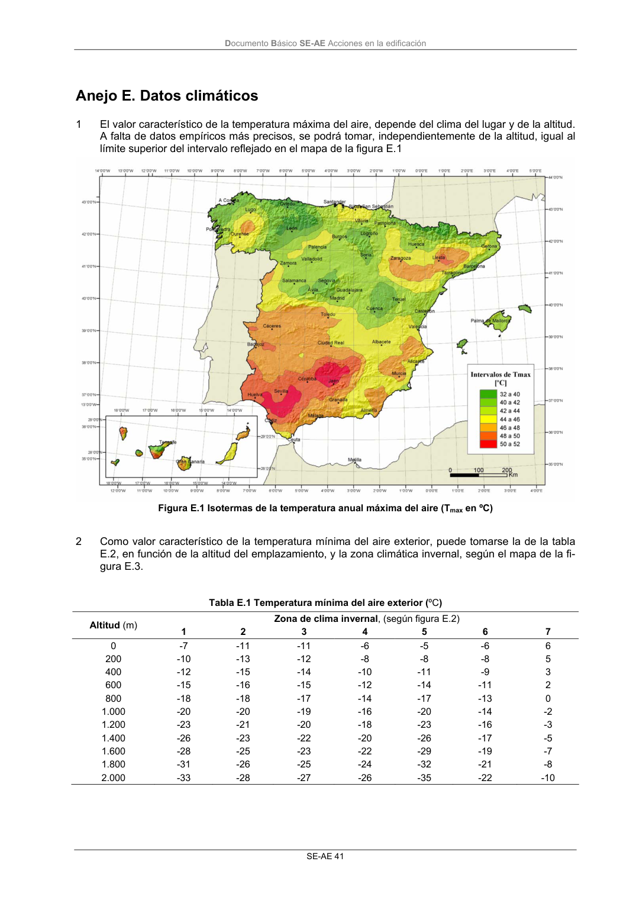
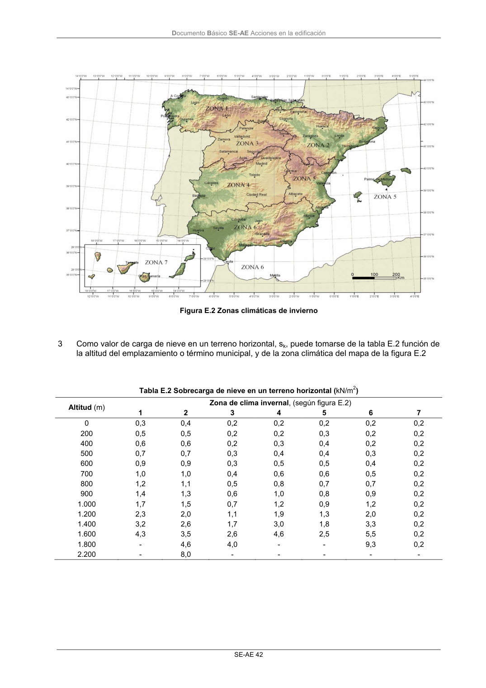

DB-SE-AE · Anejo E. Datos climáticos · versión 2009-04 · capa oficial
Formatos: JSON compacto · Markdown · PDF fuente
Ámbito del documento · texto del ámbito · documento y tablas
ID técnico a0043 · PDF pág. 45-46 · jerarquía no validada por persona · contrastado con el literal de la página 45 (candidato tipográfico); no validado por persona · padre: raíz
Anejo E. Datos climáticos 1 El valor característico de la temperatura máxima del aire, depende del clima del lugar y de la altitud. A falta de datos empíricos más precisos, se podrá tomar, independientemente de la altitud, igual al límite superior del intervalo reflejado en el mapa de la figura E.1 Figura E.1 Isotermas de la temperatura anual máxima del aire (Tmax en ºC) 2 Como valor característico de la temperatura mínima del aire exterior, puede tomarse la de la tabla E.2, en función de la altitud del emplazamiento, y la zona climática invernal, según el mapa de la fi- gura E.3. Tabla E.1 Temperatura mínima del aire exterior (ºC) Zona de clima invernal, (según figura E.2) Altitud (m) 1 2 3 4 5 6 7 0 -7 -11 -11 -6 -5 -6 6 200 -10 -13 -12 -8 -8 -8 5 400 -12 -15 -14 -10 -11 -9 3 600 -15 -16 -15 -12 -14 -11 2 800 -18 -18 -17 -14 -17 -13 0 1.000 -20 -20 -19 -16 -20 -14 -2 1.200 -23 -21 -20 -18 -23 -16 -3 1.400 -26 -23 -22 -20 -26 -17 -5 1.600 -28 -25 -23 -22 -29 -19 -7 1.800 -31 -26 -25 -24 -32 -21 -8 2.000 -33 -28 -27 -26 -35 -22 -10 Documento Básico SE-AE Acciones en la edificación SE-AE 42 Figura E.2 Zonas climáticas de invierno 3 Como valor de carga de nieve en un terreno horizontal, sk, puede tomarse de la tabla E.2 función de la altitud del emplazamiento o término municipal, y de la zona climática del mapa de la figura E.2 Tabla E.2 Sobrecarga de nieve en un terreno horizontal (kN/m2) Zona de clima invernal, (según figura E.2) Altitud (m) 1 2 3 4 5 6 7 0 0,3 0,4 0,2 0,2 0,2 0,2 0,2 200 0,5 0,5 0,2 0,2 0,3 0,2 0,2 400 0,6 0,6 0,2 0,3 0,4 0,2 0,2 500 0,7 0,7 0,3 0,4 0,4 0,3 0,2 600 0,9 0,9 0,3 0,5 0,5 0,4 0,2 700 1,0 1,0 0,4 0,6 0,6 0,5 0,2 800 1,2 1,1 0,5 0,8 0,7 0,7 0,2 900 1,4 1,3 0,6 1,0 0,8 0,9 0,2 1.000 1,7 1,5 0,7 1,2 0,9 1,2 0,2 1.200 2,3 2,0 1,1 1,9 1,3 2,0 0,2 1.400 3,2 2,6 1,7 3,0 1,8 3,3 0,2 1.600 4,3 3,5 2,6 4,6 2,5 5,5 0,2 1.800 - 4,6 4,0 - - 9,3 0,2 2.200 - 8,0 - - - - -


PDF fuente redistribuible: copia fiel enlazada en esta página (SHA256 verificado).